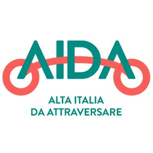

Verona Bike home
Only official bike routes provincia di Verona, Veneto
Ciclabili nazionali
I1 Itinerario I1 - I2 Regione Veneto


EV7 Route Eurovelo 7
AIDA Ciclovia Nazionale AIDA
Terre di Custoza, Sommacampagna
vigne e parchi by Bike tra vigne e parchi


29 Ciclabile 29
Verona Sud
Adige sud Ciclovia adige sud
CDR Ciclovia delle risorgive
Claudia Augusta Ciclovia Claudia Augusta
Verona Mantova Verona, Mantova
Verona Bicipolitana
bicipolitana Verona


